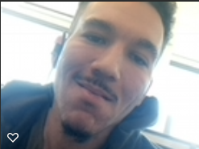

Hi, I'm Noah! I'm a dynamic Full-Stack Web Developer based in Austin.
Recognized for demonstrating independent discipline, flexibility, and a customer-oriented attitude, I have a verifiable history of contributing directly to company growth and expansion throughout my career. Professional focal points include sales, scheduling, data entry, web formatting, proofreading/editing, social media marketing, content management, cross-functional team leadership, complex problem-solving, and client relationship management.
Some of my skills include HTML, CSS, Git, Responsive Design, Javascript, JQuery, JSON, Node, SQL, OOP, Express, and MongoDB. In my free time I enjoy spending time with family, the outdoors, reading and writing. I play basketball and soccer, as well as volunteer to coach and ref kids games at the YMCA.
I am interested in learning about new opportunities and can be reached through through Linkedin or by email: nizzyno@icloud.com. A full list of my apps and repositories can be found on Github.